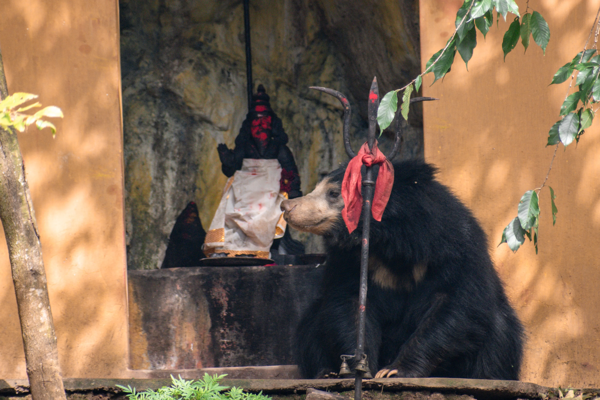
A Photographic Study · India
Animals moving through the spaces we make, share, alter and call our own.
Foreword
India is full of borders that look permanent from a human distance: shrine and forest, road and grassland, temple and street, enclosure and open ground.
Animals cross them differently. Some are invited in. Some are tolerated. Some are fenced out. Some simply pass through, as if the line was never there.
This is an ongoing photographic study of those overlaps — not wildlife apart from people, but animals living within landscapes we have marked, altered, occupied and shared.
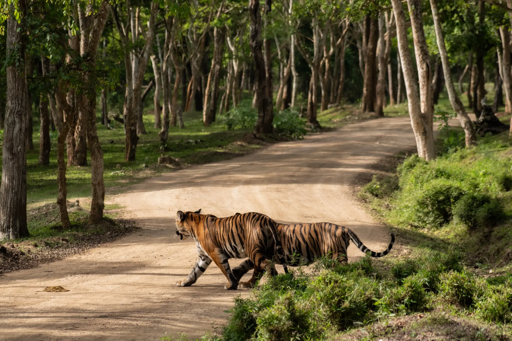
I — The Shrine
Nilgiris · forest shrine
Plate 01 · Bear at the Shrine
Sloth Bear - Melursus ursinus
In The Nilgiris of southern India, ancient wildlife paths intersect with places of human devotion. This wild sloth bear paused beside a small forest shrine worshipped daily by local tribal communities — a space where people and wildlife live through the shared wilderness. Sloth bears here are known to investigate temples for the scent of ghee used to fuel ritual diyas. As development pushes further into biodiverse landscapes, encounters like this reveal the delicate balance between culture and nature — and the hopeful possibility of coexistence.
II — The Shared Landscape
India · altered habitat
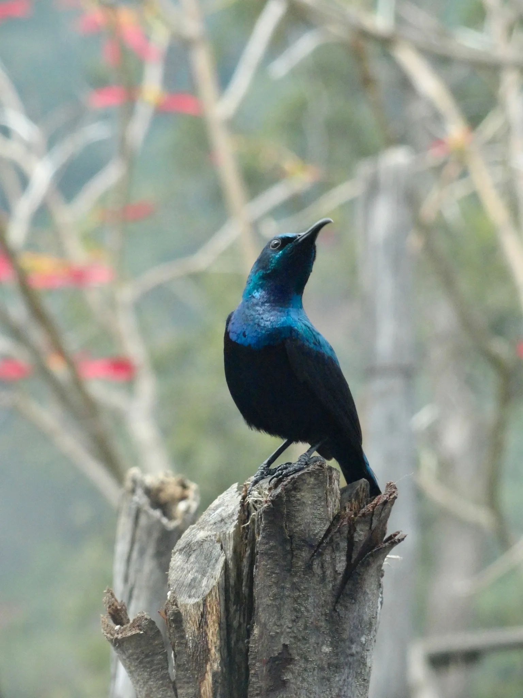
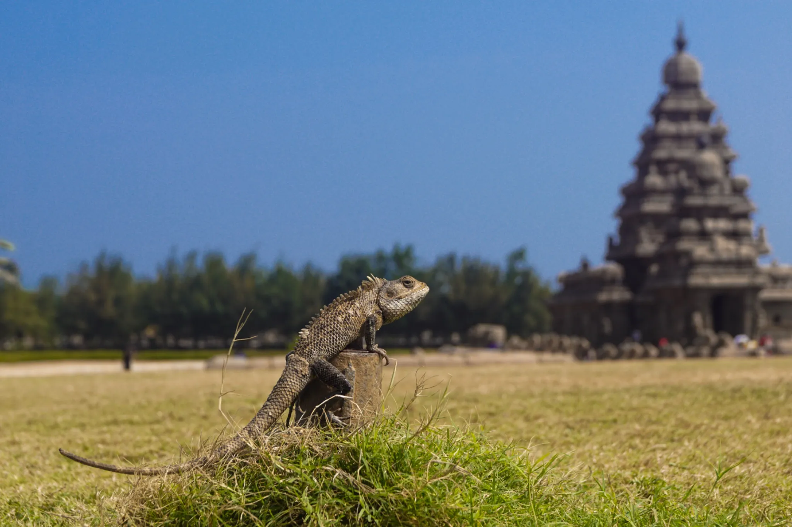
Plates 02–03 · Traces
Loten's Sunbird - Cinnyris lotenius , Indian Garden Lizard - Calotes versicolor
A cut tree. A temple lawn. Neither image shows a confrontation. The boundary appears instead in the landscape itself — in what has been cleared, built, maintained, or left for an animal to occupy.
III — Outside the Map
Nilgiris · open country
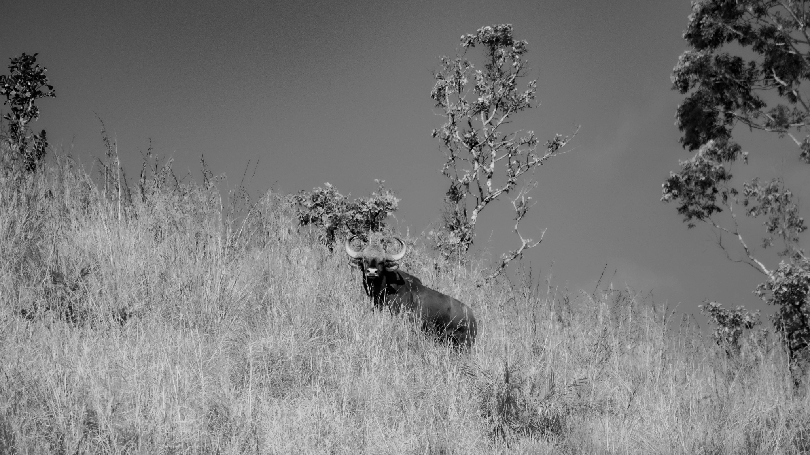
Plate 04 · The Watcher
Gaur - Bos gaurus
Framed by grass, sky and the thin human idea of a safe distance. There is no fence here. Only space, attention and the animal's decision to remain.
IV — Shared Shelter
Varanasi · riverfront
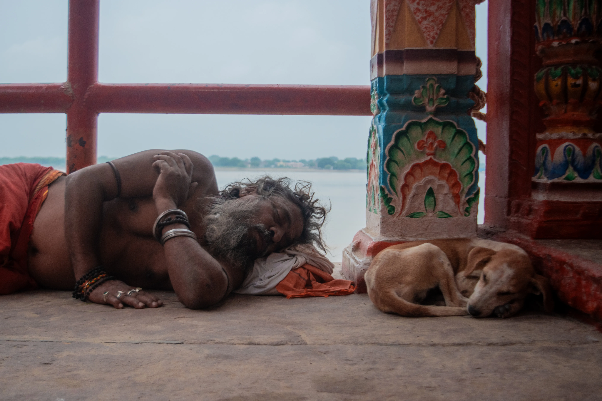
Plate 05 · The Same Patch of Shade A priest and a stray pup asleep beside one another. Neither is performing a relationship. The photograph is interesting precisely because the boundary has temporarily disappeared.
V — The Street
Karnataka · residential street
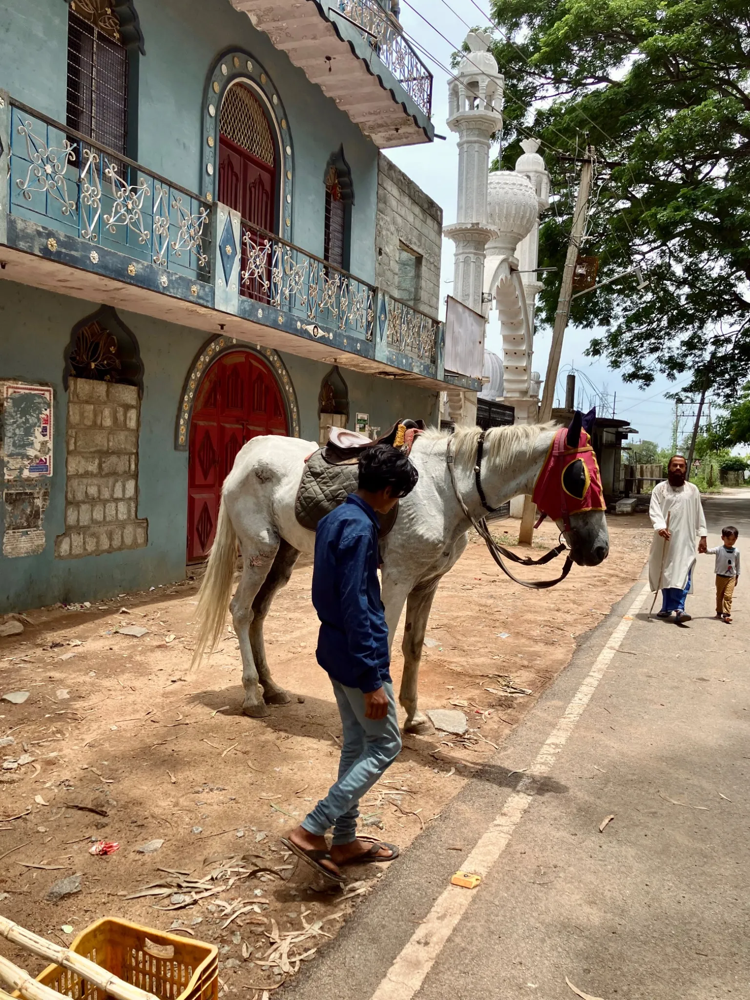
Plate 06 · A Road Shared Dirt shoulder, asphalt, pedestrians, horse and handler — several ways of occupying the same narrow strip of ground. The boundary is negotiated rather than marked.
VI — Animals We Keep
Vrindavan · shelter / enclosure
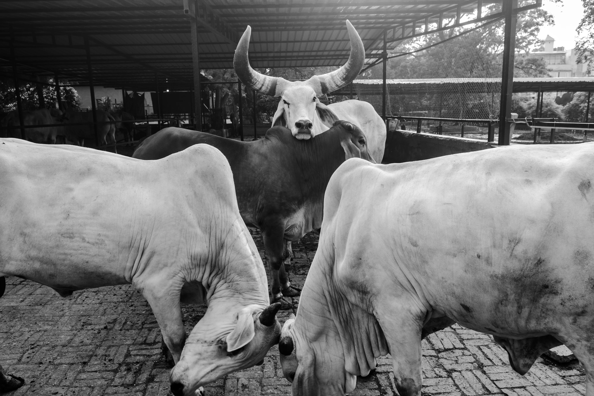
Plate 07 · The Herd In Vrindavan, cows are sheltered in the name of Krishna. Food arrives, shade holds through the afternoon, and the days settle into a familiar rhythm. Whether this is care or confinement depends on where you stand. For the cow, perhaps it is neither — only a place to stand while the world passes.
VII — The Temple Animal
Kerala · temple precinct
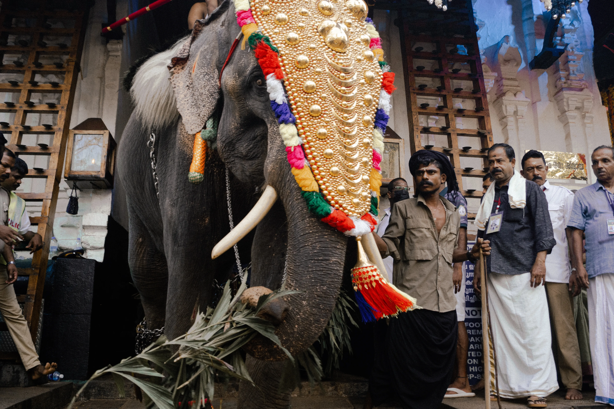
Plate 08 · Elephant in the Temple Here the animal does not merely occupy human space. It occupies human meaning — watched, decorated, handled, and made central to the ceremony.
VIII — The Protected Forest
Southern India · safari road
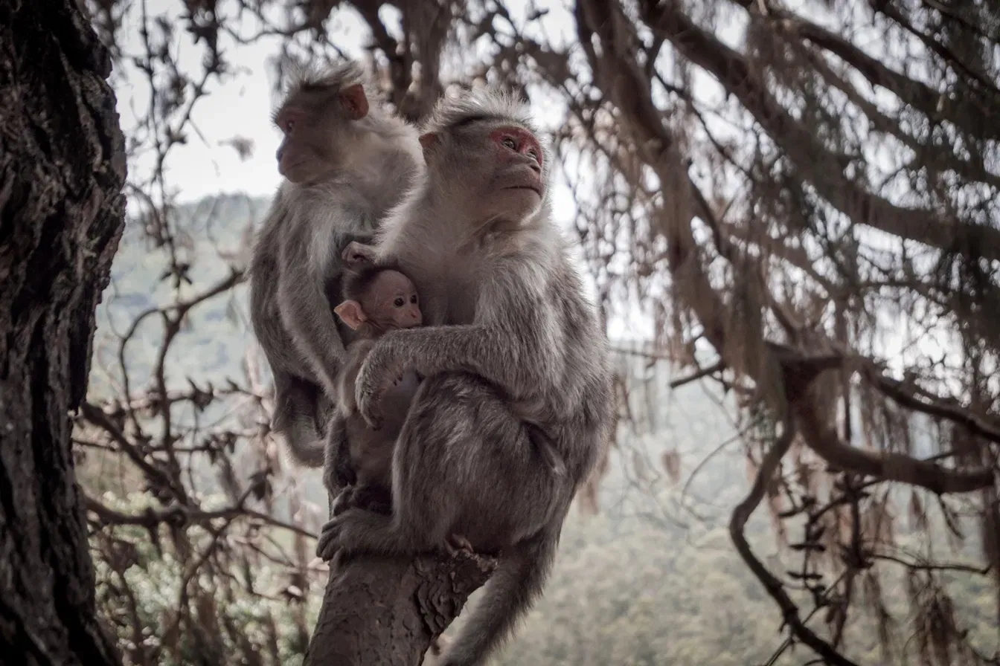
Plates 09–10 · Within the Reserve The road here is not a city road cutting into an unknown forest. It is a managed line inside protected habitat — built for human access, yet still crossed on the animal's terms. Nearby, the Macaques occupy the trees above it, indifferent to the distinction.
IX — In Flight
India · open air
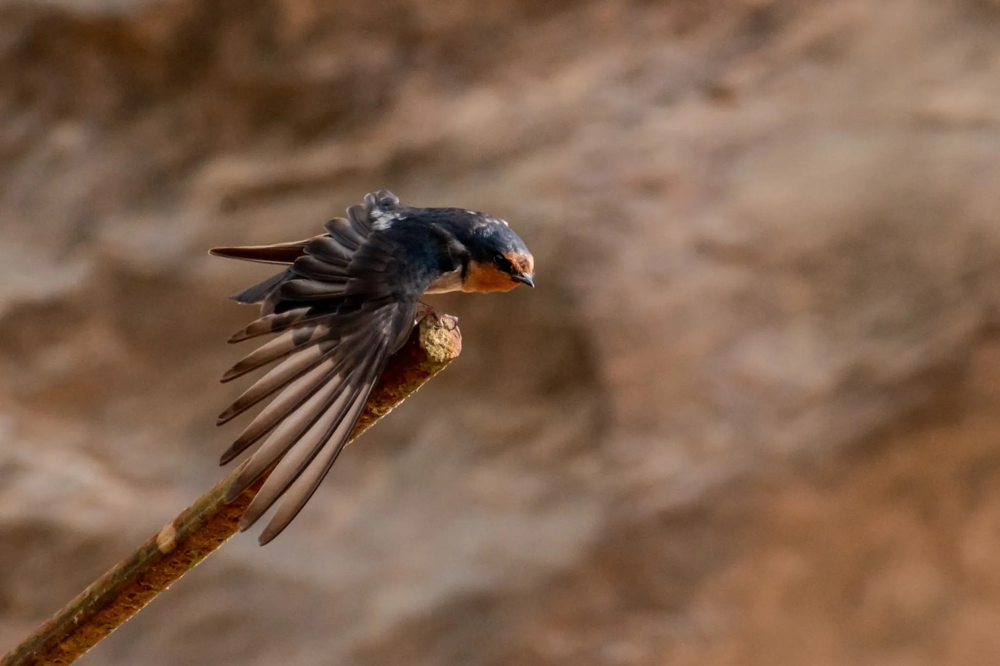
Plate 11 · Passing Through
Barn Swallow - Hirundo rustica
At the edge of an unfinished bridge, a bird settles on a piece of steel left behind. Human construction ends where its attention begins.
We build fences around animals to keep them safe, to keep us safe, and sometimes simply because we want to keep them close.
Beyond the glass and concrete, their bodies remain wild in scale, instinct and memory. But the world around them has been measured, divided and made predictable.
A fence is a simple thing. From one side, it is protection. From the other, it is a limit.
Perhaps the difficult part is not deciding whether these animals are happy or sad. It is noticing how easily a boundary can turn a living world into a space.
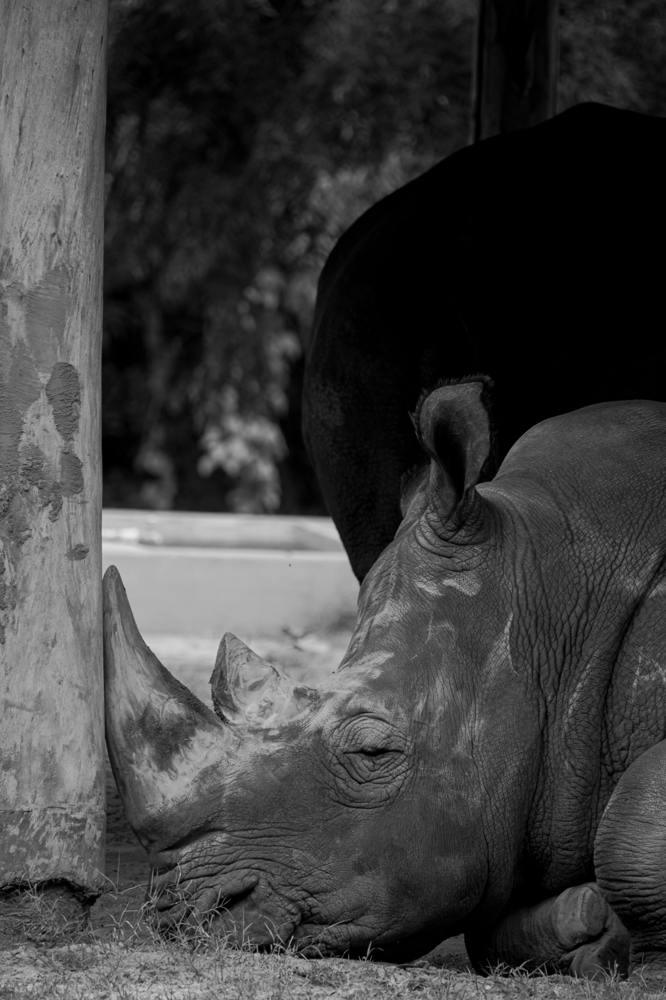
White Rhinoceros - Ceratotherium simum
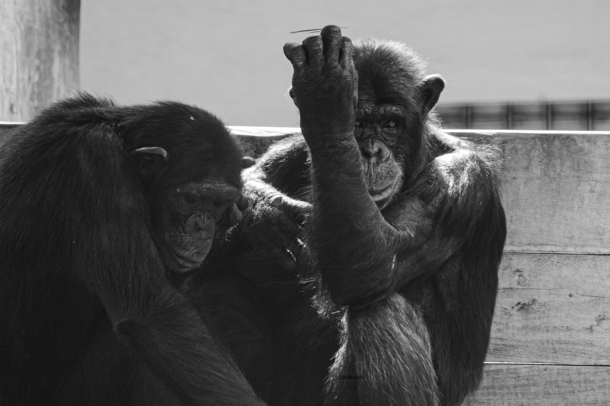
Chimpanzee - Pan troglodytes
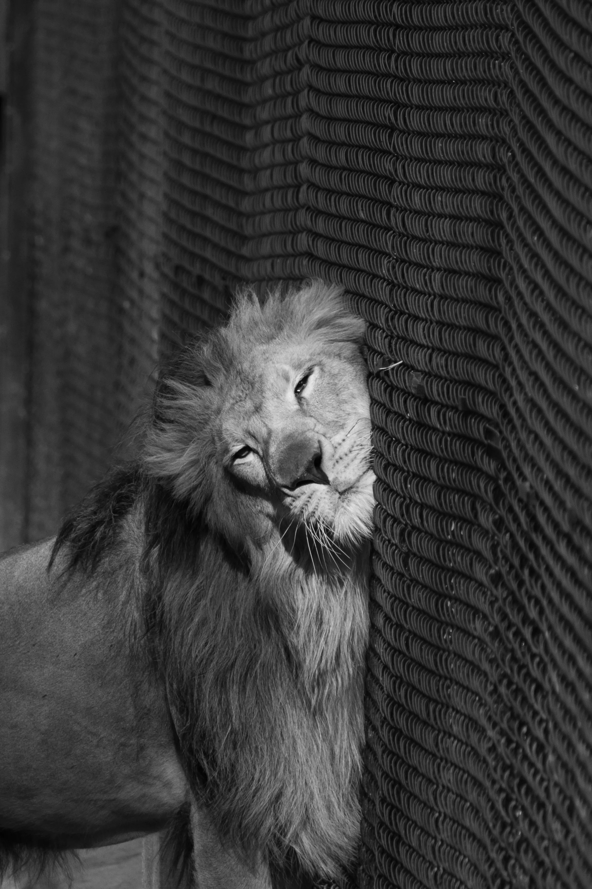
Lion - Panthera leo
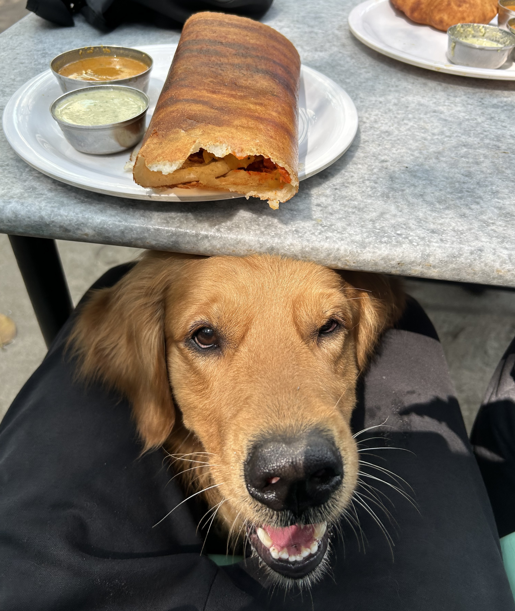
Coda
The photographs are fragments of a larger question: how do animals live with the boundaries humans draw around them — and what do those overlaps reveal about the way we share a landscape?